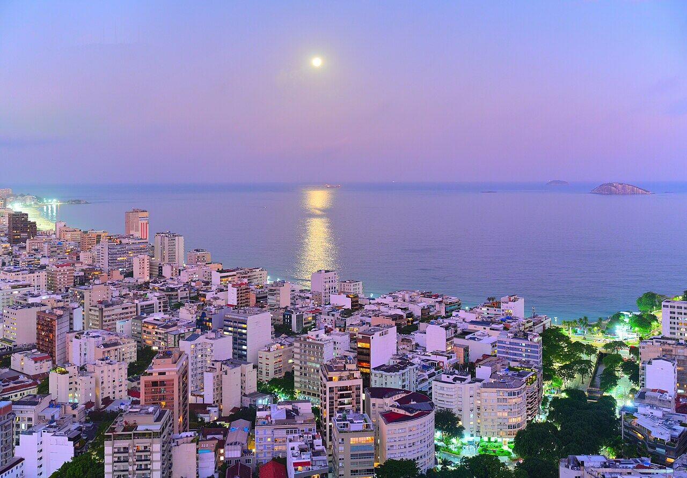

Rooftops de hotéis
Ipanema, Copacabana, Santa Teresa
Drinques com vista de Ipanema, Copacabana ou Santa Teresa.
Nosso comentário
Vários hotéis têm bares no terraço abertos ao público, com vista para o mar ou para a baía. O fim de tarde é o melhor momento: dá para ver o pôr do sol e ficar para a noite.
Dicas
- Alguns terraços são exclusivos para hóspedes; confiram antes.
- Reservem nos fins de semana.
Combina com
- Pôr do sol no Arpoador de noite
- Astor de noite
Fotos do lugar
